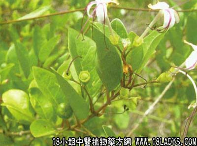

别名：水胡满、缸瓦林、路边清。
植物名：假茉莉。
生长环境：本品为直立灌木。生于潮汐能至的河边、小溪旁，或基围上。
分布：广州附近常见，在沿海地区普遍生长，此外亚洲热带地区亦有。
入药部分：枝、叶。
采集期：全年。
自采地点：郊外塘边。
性味：性大寒、味道苦、气微臭、有微毒，不可滥服过量。
功能：散瘀消肿、杀菌、止痕、去毒。
主治、用量和用法：1、苏劳撞红，配伍用；2、石肯：用干叶为末，加生神仙掌适量擂烂，煮热外敷；3、跌打：鲜叶取汁5钱，加酒适量，炖1小时服。
验方：（治苏劳、撞红方）苦蓢叶5钱、马齿苋1两、旱莲草1两、井栏荽1两、羊蹄草1两、风档叶1两、扁柏1两，都生用，擂烂取汁，加酒适量，炖一小时服。
（方解）本方苦蓢、旱莲草、井栏荽、羊蹄草、扁柏、风档叶清热祛瘀，马齿苋、羊蹄草、井栏荽清利大小便，邪从下夺。苏劳、撞红用之有效。
（方歌）苏劳撞红苦蓢叶，旱莲栏荽马齿苋，扁柏风档与羊蹄，擂汁酒炖毒能撤。